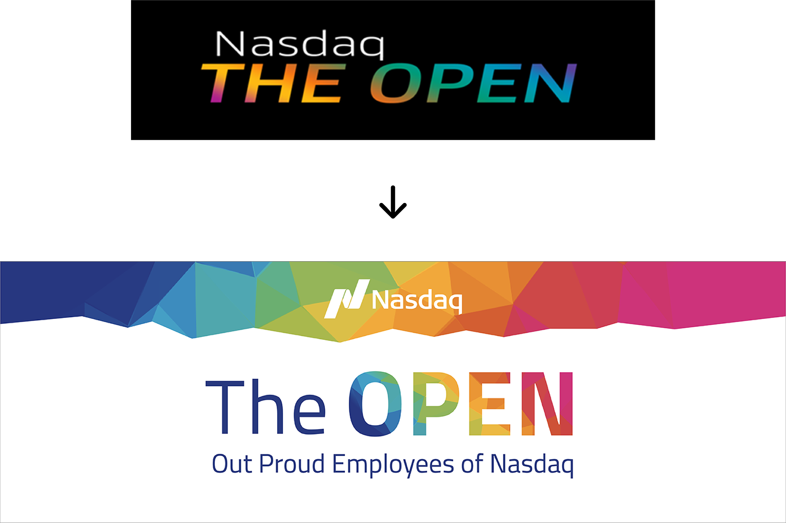
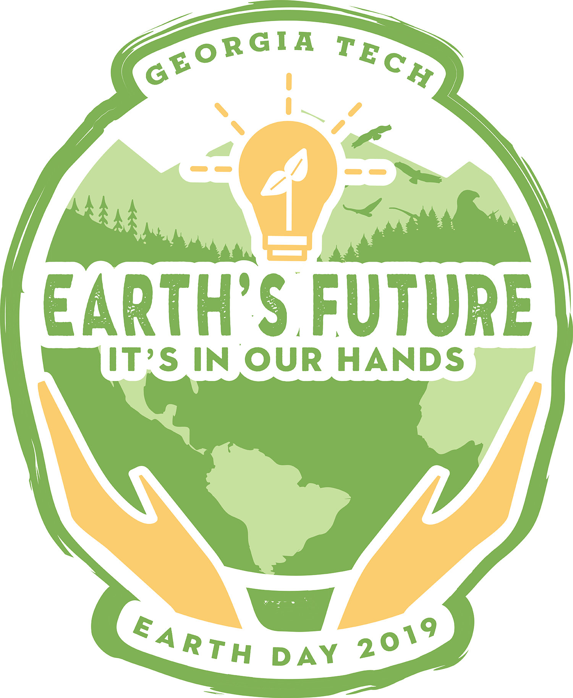

I created this data visualization as part of a major project in my Principles of Information Design class. Full documentation of my work process can be found here.
This is an example of a digital graphic I created for a LinkedIn ad campaign that showcases the platform interface.
During my marketing internship I was asked to design a T-shirt commemorating the annual company hackathon. The following year I was contracted as a freelancer to design a mug that would be sent to all participants for a virtual version of the hackathon.
I worked with the Private Markets team to design this whitepaper during the final semester of my marketing internship.
The OPEN is an affinity group for LGBTQ+ employees of eVestment and NASDAQ. I was initially asked to create the brand identity for the eVestment chapter of the group and was later invited to present the visual concept to NASDAQ members as well. My design was adopted for the re-brand in August 2019.
This was my entry in the annual Georgia Tech Earth Day T-Shirt design contest. It was selected as the 2019 contest winner of the $500 cash prize.